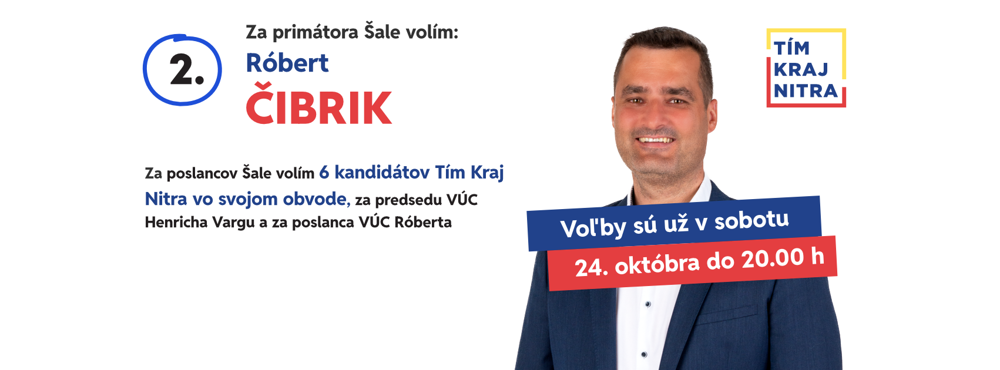

Náhľad titulnej fotky na Facebooku
Pracovný náhľad, na web sa nenasadzuje. Rozmery sú podľa odporúčaní Mety (počítač 820 × 312, mobil 640 × 360). Facebook rozloženie občas mení, presný výsledok ukáže až skutočný profil.
Na počítači


Ján Volič
Na mobile
Ján Volič
Čo z obrázka mobil ukáže
Červený rám je časť, ktorú Facebook na mobile zobrazí. Stmavené boky odreže.